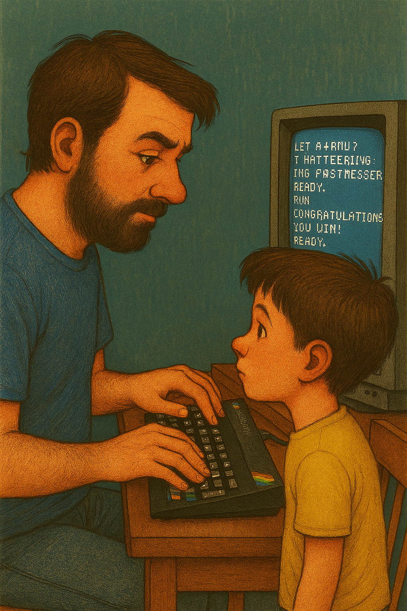
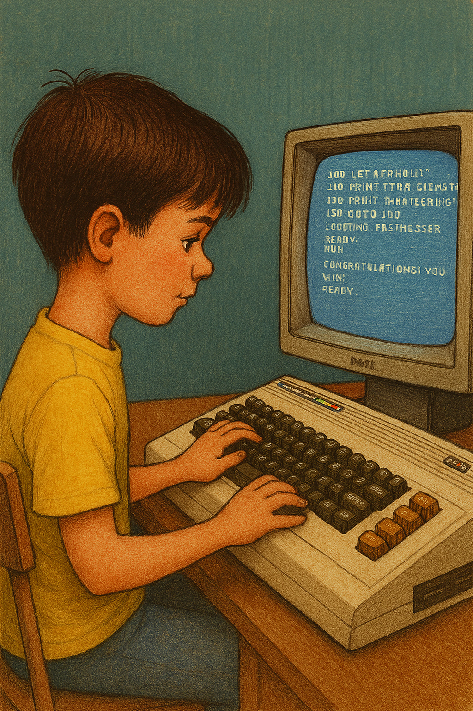
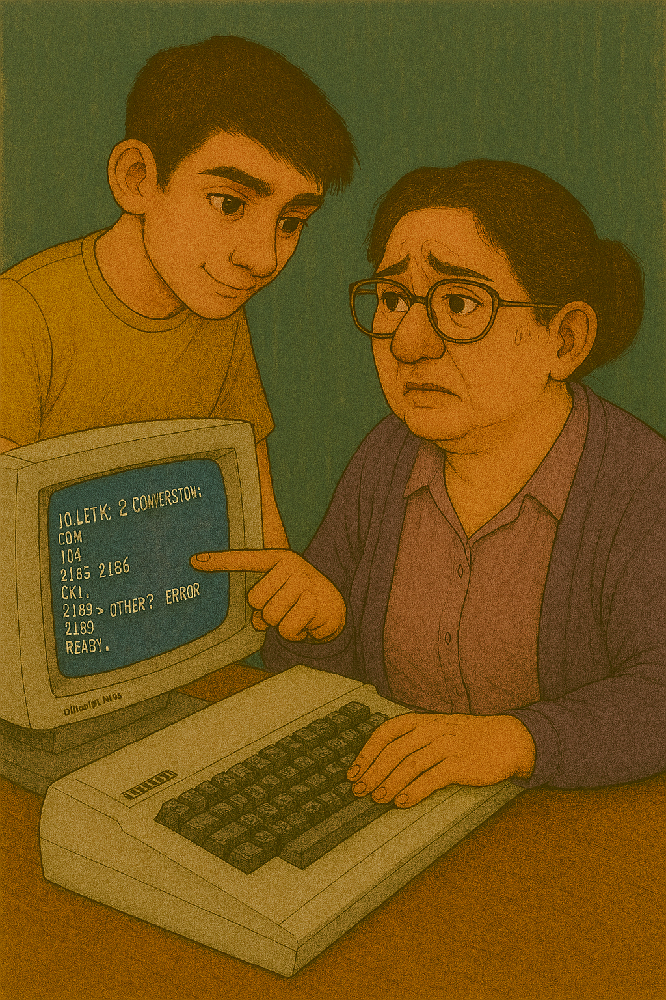
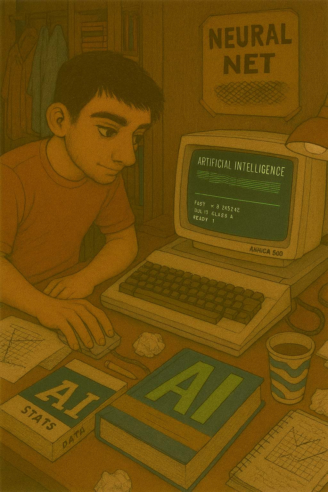
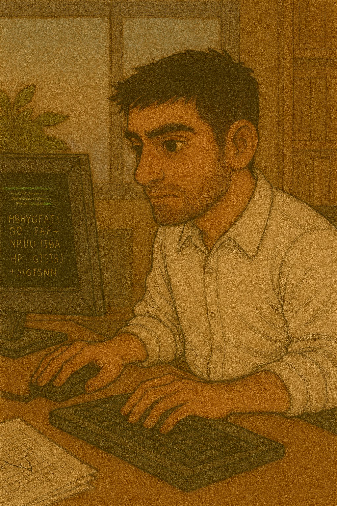

Contatto
Formazione
Istituto Tecnico L. Einaudi di Bassano del Grappa
1985-1990
Diploma di Ragioniere 58/60
Università di Milano, Facoltà di Scienze dell'informazione
1991-1993
Non laureato
Esperienze Professionali
Scuola di Artiglieria di Bracciano
1993-1995
Sottotenente istruttore
Metodo SpA di Bassano del Grappa
1995-2006
Programmatore e successivamente responsabile di prodotto
Libero Professionista
2006-2009
MOX Solutions Srl
2009 ad oggi
Socio titolare, e CEO della divisione di Pianificazione, Logistica e Produzione
Conoscenze
Linguaggi di Programmazione
Visual Basic, VB.NET, C, C++, C#, Java, JavaScript, SQL, HTML, CSS
Sistemi Operativi
Windows, Mac, Linux
Framework
Microsoft.Net, ASP.NET, Bootstrap, Angular.js, Node.js
Database
SQL Server, PostgreSQL, MySQL
Ambienti di Sviluppo e IDE
Visual Studio, Visual Studio.NET, SQL Server Management Studio, Eclipse
Lingue Straniere
Inglese (Buono), Francese (Scolastico)
Passioni
Collezionismo di dischi in vinile e fumetti. Cinema e concerti dal vivo. Trekking in montagna. Biodanza. Tango argentino. Suono il flauto traverso.
Luigi Ferraro
Software Architect e Imprenditore
Mi racconto
E' strano scrivere un curriculum a 52 anni. La prima e ultima volta che che l'ho fatto ne avevo 23. Una vita fa. Costringe a mettersi comodi e ripercorrere la propria esistenza, riguardandola come se si stesse vedendo un film, come se fosse la vita di un altro. La tentazione è stata quella di scaricare un modello di word e scrivere qualche dato anagrafico, ma poi mi sono messo qui, davanti a questo foglio bianco, e le parole hanno iniziato a fluire.
Primi anni
 Sono nato nel 1972 a Bassano del Grappa. La mia vita da informatico é iniziata 8 anni dopo quando, durante le feste di Natale, come di consueto, la famiglia con tutte le sue propaggini (nonne, zii, cugini) si trovava nella grande casa dei nonni. Là mio zio Luigi (sarà un caso ma ha il mio stesso nome) ha portato un oggetto “magico”. Uno ZX Spectrum 80 collegato ad un altro oggetto misterioso, un piccolo plotter. Ha iniziato a battere i tasti gommosi di quello che era uno dei primissimi home computer della storia. Io guardavo estasiato l’oggetto ed i codici “magici” che uscivano dalle sue dita. E quando, dopo un po’, lanciando il programma che aveva appena scritto, nello schermo è apparsa una stella cometa… e poco dopo è stata stampata dal plotter… beh… il mio destino era stato segnato. Avrei capito cos’erano quei codici ed un giorno sarei stato anch’io capace di scriverli.
 A 9 anni avevo il mio primo computer, un Commodore Vic20. Aveva 3,5Kb di memoria. Meno di quella che ha oggi un citofono :-) Eppure con quello ho imparato a programmare, prima in Basic e dopo, visto che la potenza non mi bastava, anche in assembler. Ho fatto quasi tutto da solo, con il solo aiuto di qualche libro ed un video corso di programmazione comprato in edicola. E tanto tanto tempo e passione. Il fuoco si era acceso e non si sarebbe più spento.
Esperienze Scolastiche
 Alle superiori studio in un corso sperimentale di ragioneria all'Istituto L. Einaudi di Bassano. L'unica scuola, a quel tempo, che si vantava di avere fra le materie di insegnamento l'informatica. Ma gli anni erano passati e, da autodidatta, ne sapevo più di quella povera professoressa di matematica che era stata catapultata in un mondo evidentemente non suo. Esco dalla ragioneria con ottimi voti: 58/60 e l'amaro in bocca per aver capito che la mia strada non sarebbe stata quella che i miei studi avrebbero previsto.
 Mi iscrivo a Milano, alla facoltà di Scienze dell'informazione, forte di una borsa di studio presa per il voto della maturità. Ma fatico non poco ad adattarmi alla grande città. E anche gli studi non vanno come vorrei. Le materie matematiche sono ostiche, e la limitata preparazione avuta dalla ragioneria mi obbliga a studiare, da solo, i libri di mia zia che aveva invece fatto lo scientifico.
Nelle materie informatiche, invece, eccello. E negli esami pratici, propongo ai professori, di fare dei progetti molto più ambiziosi di quelli proposti. Studio in autonomia algoritmi di intelligenza artificiale (si, negli anni 90 c'era già, e con computer immensamente meno potenti di quelli attuali) e sviluppo sistemi che, per quell'epoca, erano veramente all'avanguardia.
Nel frattempo inizio a lavorare saltuariamente come venditore di computer presso alcuni negozi di Milano e collaboro con una piccola società formata da ex-studenti universitari che sviluppano applicazioni su sistema operativo Apple.
Ma il cuore mi gioca un brutto scherzo e, al terzo anno, lascio tutto con l'intenzione di sposarmi e fare famiglia.
Carriera Militare
 Nel 1993 faccio il militare come ufficiale di complemento nel corpo di Artiglieria da Montagna. Termino il corso ufficiali e sono uno dei primi del mio corso. Mi viene chiesto di rimanere alla Scuola di Artiglieria di Bracciano e lì presto servizio come Sottotenente istruttore.
Nel 1993 faccio il militare come ufficiale di complemento nel corpo di Artiglieria da Montagna. Termino il corso ufficiali e sono uno dei primi del mio corso. Mi viene chiesto di rimanere alla Scuola di Artiglieria di Bracciano e lì presto servizio come Sottotenente istruttore.
Esperienze Lavorative
 Uscito con i gradi di tenente, inizio a cercare lavoro e mando curriculum come… ragioniere :-( Alcune banche mi rispondono e i colloqui vanno bene. Ma il mio destino era un altro. Ed una serie fortuita di coincidenze (ma il caso, poi, esiste davvero?) mi portano a bussare alla porta della Metodo Spa di Bassano del Grappa. Software House locale che sviluppa un software gestionale per aziende.
Là trovo terreno fertile per la mia passione. É periodo di grandi cambiamenti perché si sta passando dal mondo DOS con interfaccia a caratteri, al mondo delle finestre, dei mouse e della grafica. Windows é approdato nei PC e il gestionale va riscritto. Entro nel team ed inizio quasi subito a sviluppare i moduli di magazzino e produzione.
In pochi anni, complice il forfait dei vecchi responsabili di prodotto, divento io stesso responsabile di prodotto. Nel frattempo cambiano le tecnologie, i sistemi operativi, ed io continuo a dare sfogo alla mia creatività sfornando, sempre per Metodo SpA, prodotti innovativi che vengono aggiunti al ricco listino di moduli del gestionale.
Nel 2002 esce la prima versione di Microsoft.Net (framework di programmazione Microsoft molto innovativo per l'epooca) ma Metodo non era pronta per un nuovo cambio tecnologico e continua a sviluppare nelle vecchie tecnologie. Inizio a studiare da solo e mi appassiono al mondo “mobile” che iniziava a fare i primi passi. Acquisto un palmare usato ed inizio a svilupparci sopra applicazioni che usavo io stesso.
Successivamente ideo e sviluppo un mio ambiente RAD (Rapid Application Development) per programmare velocemente applicazioni mobile. Propongo il progetto a Metodo che però non è interessata. Nel frattempo, infatti, era in fase di cessione al gruppo TeamSystem ed il management mancava totalmente di visione del futuro.
Lavoro in Metodo Spa come dipendente dal 1995 al 2006.
Nel frattempo, tramite il mio RAD, sviluppo le prime applicazioni per il magazzino (inventario, gestione della spunta merce). E' arrivato il momento di fare il grande salto. Divento libero professionista ed assieme ad altri 2 soci (anch'essi ex dipendenti Metodo) fondiamo la MOX Solutions Srl (https://www.moxsolutions.it). Parallelamente continuiamo a collaborare con Metodo Spa per la manutenzione del suo gestionale e a proporre alla stessa i prodotti che nel frattempo erano stati sviluppati. Nel dicembre del 2007 i nostri prodotti iniziano ad essere venduti tramite la rete della Metodo.
Nel 2009 ci stacchiamo definitivamente da Metodo SpA (che nel frattempo aveva terminato la cessione al gruppo TeamSystem) ed apriamo la nostra prima sede operativa. Assumiamo i primi due dipendenti: un programmatore ed una amministrativa. MOX Solutions è diventata una realtà operativa al 100%.
Oggi, dopo quasi 20 anni, siamo una realtà formata da due aziende. MOX Solutions Srl (https://www.moxsolutions.it) che si occupa di sviluppo di applicazioni di quotazione e vendita, pianificazione, logistica di magazzino, produzione. E Temovo Srl (https://www.temovo.com) che si occupa di gestione vendite tramite iPad. Abbiamo più di 20 dipendenti centinaia di clienti nazionali ed internazionali.
Il mio ruolo di imprenditore non ha cambiato minimamente la mia passione per la programmazione. Come responsabile della divisione che si occupa delle applicazioni di Pianificazione, Logistica e Produzione mi occupo tuttora dello sviluppo delle applicazioni core dell’azienda.
Negli anni ho sempre formato i miei collaboratori e fatto ripetizioni (rigorosamente in modo gratuito) a numerosi studenti in difficoltà con le materie informatiche (figli, compagni dei figli, figli di amici). Penso pertanto di avere una buona propensione per l’insegnamento di queste materie che deriva non solo dalle esperienze fatte sul campo ma soprattutto dalla mia passione che mai si è spenta negli anni e che cerco sempre di trasmettere alle persone con cui mi trovo a parlare di informatica.
Conclusione
Mi ripeto, è strano scrivere un curriculum a 52 anni. Soprattutto quando non è alla ricerca di un lavoro. E anzi, si è consapevoli che un'eventuale collaborazione, toglierebbe del tempo al mio (già esiguo) tempo libero. Eppure insegnare la programmazione a dei giovani ragazzi è un mio sogno da sempre. Forse perché trasmettere a loro (anche ad uno solo di loro) quel fuoco che tanti anni fa zio Luigi ha trasmesso a me, sarebbe un ringraziamento alla vita. Una sorta di “restituzione” per tutto quello che ho ricevuto in questi anni dalla passione per l’informatica. E la luce di quella stella cometa, disegnata una vita fa da mio zio tramite codici “magici”, riprenderebbe a brillare negli occhi di un altro ragazzo… e forse di un altro… e di un altro ancora.